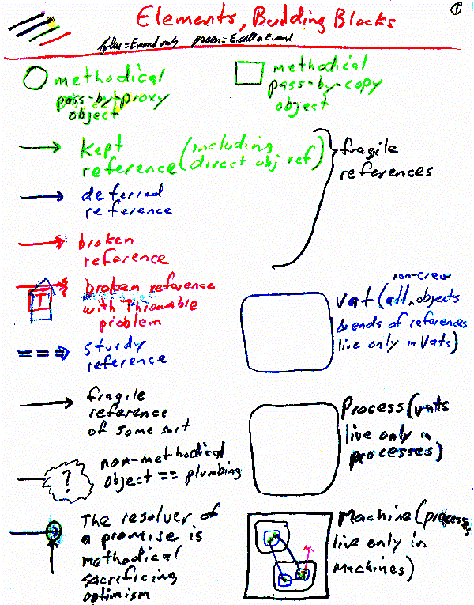

Last updated: [July 10, 1998. MarkM]
Document authored by MarkM.
Original Subsystem (E) authored primarily by Danfuzz Bornstien.
Current Subsystem (ELib and E)
authored by MarkM.
See "What Javadoc Does Who Need to Know?" below, to get started quickly.
Over time, programmers have become (in some ways) reasonably successful at organizing computation that occurs within a single machine. The necessary lessons cost generations of failed companies. For Electric Communities to succeed, we must become reasonably successful at organizing computation spread across a large number of machines, while securely serving the interests of a diverse set of parties. To succeed at this, we cannot afford to learn the necessary lessons from scratch -- these would likely be even more expensive than the uni-machine lessons. Nor can we simply leverage the lessons of previous distributed systems builders -- there are not yet adequate demonstrations of success. Instead, we must borrow lessons from uni-machine programming where appropriate.
But only where appropriate! Distributed systems (such as CORBA and RMI) can also fail by overgeneralization from uni-machine programming practices. In certain ways, uni-machine and distributed systems are very similar. In other ways, they are very different. Our strategy for generalizing uni-machine programming paradigms must account for both their similarities and their differences.
Some current issues with the design of New-E have their own pages explaining the design space and the potential
solutions.
Currently the only one is the proxy typing discussion.
E derives from a long and diverse pedigree of languages and operating systems:
Agorics' KeyKOS pages, and Jonathan Shapiro's KeyKOS and EROS pages.
Ken Kahn & Mark Miller, "Language Design and Open Systems" in The Ecology of Computation, ed Bernardo Huberman, North Holland, 1988.
"The E Extension to Java" (an EC white paper)
"Satan Comes to Dinner" (secure dining philosophers in E)
Mark Stiegler's "Intro to Capability Security"
MarkM's "Computer Security" pages (still in formation)
Presentation on Mult-E to OnLive (powerpoint converted to html)
"A wise man even learns from the mistakes of others" --seen on a fortune cookie.
Smooth integration between the local/sequential and distributed worlds.
Powerful and simple programming paradigm for organizing distributed computation, that accomodates the properties of distributed systems.
Single address space test: Programs built correctly for the distributed case work correctly in the local case.
Requirements (or strong preferences) not met by the current E system:
| Abstraction mechanisms | Object-oriented programming | As in Smalltalk |
| Security | Capability patterns | As in KeyKOS |
| Concurrency | Actors/Event-loop programming | As in Joule |
| Partial Failure | "Quake" model of failures Sturdy vs Fragile References |
| Inherently Asynchronous | One-way Messages |
| Long Latencies | Non-blocking event loop Optimistic References Pipelined Requests |
| No Universal TCB | Object/Machine Trust Equivalence |
| Objects outlive versions | State Bundles (outside E) |
| Comm Co-existence | Not currently supported |
The introduction set the scene; this section gives the key properties of the current design. It may mention classes and some important interfaces but it doesn't go into details. Someone should be able to read just the overviews of our design documents and get a good understanding of how the system works and fits together, without knowing the full details. Also include any insights gained from experience like design bugs or expense discovered in usage.
These need to be turned into real illustrations surrounded by a real explanation

Any notes about potential off the shelf technologies that could be used, and their trade-offs.
Lists any special objectives and assumptions of the code e.g. reusability, thread safety, security, performance, use of resources, compatibility with existing code etc. This section gives important context for reviewers
Currently, ec5/src/javasrc/ec/elib/*. It uses ec5/src/javasrc/ec/{util, util/assertion, trace, tables}. It is used at least by ec5/src/javasrc/ec/e/*.
Note: the following links point at javadoc generated from ec4, since that is currently the only javadoc-umentation of interface (as opposed to implementation) that we have. Once we have interface javadoc-umentation of ec5, I'll edit the links accordingly. As of this writing, the ec4 javadocs are not yet too stale to be useful.
All of ELib is javadoc'ed, but for the ELib user most of this is irrelevant internal detail. The normal ELib application programmer should only need to use the methods found in E, the constructors and takeResolver method of Promise, and the methods found in Resolver.
Intermediate between ELib implementer and ELib application programmer is the ELib framework creator -- using the ELib constructs to create new forms of message plumbing. In the E language, the abstraction provided for this purpose was the Deflector. In ELib, one instead defines new implementors of Callable (for intercepting synchronous calls) or Sendable (for intercepting asynchronous and synchronous calls). For example, A Proxy would be a kind of Sendable, since it needs to intercept asynchronous calls, whereas a vat-to-crew or crew-to-vat Tether may be a Callable, if it only needs to intercept synchronous calls.
If one wished to create multiple runQ's (need link to issues), one would also need to use the class Runner. Programs not trying to do this should simply begin with:
Runner.setDefaultRunner(new Runner());
ELib is currently tested by two pieces of code: ERunDemo is a trivial test/example that demostrates event-loop concurrency and Promise-based optimism. E is a programming language, usable as a test harness to test/exercise/debug all of ELib as well as programs built using ELib. (As you might guess from the names, ELib was originally built to be the runtime library for E.)
E.whenKept() and E.whenBroken() are not yet implemented.
ERunDemo demonstrates and documents a mysterious (but repeatable!) concurrency control bug that doesn't occur under the debugger. This is high priority.
The coverage testing hooks in ec.elib.prim.JavaMemberNode provide access to global static state, and so provide a covert channel. This needs to be guarded by a capability which can be given out only to authorized testing code.
ELib to Java Binding Issues: